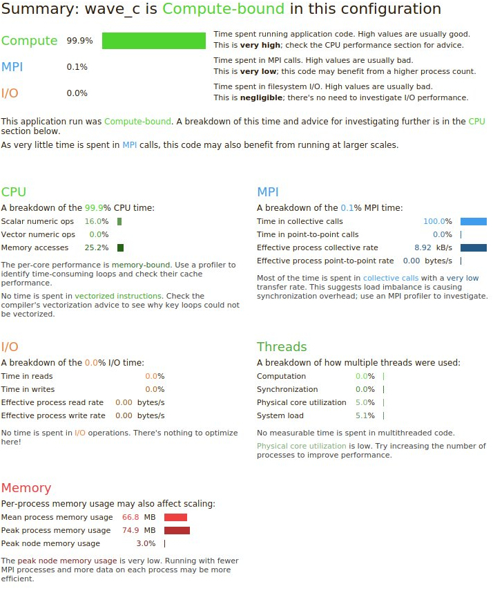

Profiling and optimization¶
In general, in order to reach performances close to the theoretical peak, it is necessary to write your algorithms in a form that allows the use of scientific library routines, such as BLACS/LAPACK.
Arm Performance Reports¶
Arm Performance Reports
offers a nice and convenient way to get an overview profile for your run very quickly.
It will introduce a typically negligible runtime overhead
and all you need to do is to load the perf-reports module
and to launch your “normal” execution using the perf-report launcher.
Here is an example script:
1#!/usr/bin/env bash
2
3#SBATCH --nodes=1
4#SBATCH --ntasks-per-node=20
5#SBATCH --time=0-00:10:00
6
7module load perf-reports/5.1
8
9# create temporary scratch area for this job on the global file system
10SCRATCH_DIRECTORY=/global/work/$USER/$SLURM_JOBID
11mkdir -p $SCRATCH_DIRECTORY
12
13# run the performance report
14# all you need to do is to launch your "normal" execution
15# with "perf-report"
16cd $SCRATCH_DIRECTORY
17perf-report mpiexec -n 20 $SLURM_SUBMIT_DIR/example.x
18
19# perf-report generates summary files in html and txt format
20# we copy result files to submit dir
21cp *.html *.txt $SLURM_SUBMIT_DIR
22
23# clean up the scratch directory
24cd /tmp
25rm -rf $SCRATCH_DIRECTORY
What we do there is to profile an example binary located in $SLURM_SUBMIT_DIR/example.x.
The profiler generates summary files in html and txt format and this is how an example html summary can look (open it in your browser):
Performance tuning by Compiler flags¶
Quick and dirty¶
Use ifort/icc -O3.
We usually recommend that you use the ifort/icc compilers as
they give superior performance on Stallo. Using -O3 is a quick
way to get reasonable performance for most applications. Unfortunately,
sometimes the compiler break the code with -O3 making it crash
or give incorrect results. Try a lower optimization, -O2 or
-O1, if this doesn’t help, let us know and we will try to solve
this or report a compiler bug to INTEL. If you need to use -O2
or -O1 instead of -O3 please remember to add the
-ftz too, this will flush small values to zero. Doing this can
have a huge impact on the performance of your application.
Profile based optimization¶
The Intel compilers can do something called profile based optimization. This uses information from the execution of the application to create more effective code. It is important that you run the application with a typical input set or else the compiler will tune the application for another usage profile than you are interested in. With a typical input set one means for instance a full spatial input set, but using just a few iterations for the time stepping.
Compile with
-prof-gen.Run the app (might take a long time as optimization is turned off in this stage).
Recompile with
-prof-use. The simplest case is to compile/run/recompile in the same catalog or else you need to use the-prof-dirflag, see the manual for details.
Vtune¶
Intel Vtune Amplifier is a versatile serial and parallel profiler, with features such as stack sampling, thread profiling and hardware event sampling.
Totalview¶
Totalview is a source- and machine-level debugger for multi-process, multi-threaded programs.